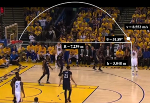

Quadratic function calculator
Second degree equation
The second degree equation is an equation that envolves a second degree trinomial, so this is a equation with 3 terms and one of them has a element raised to 2 (thats is why the equation is called quadratic)
ax² + bx + c is the base form, which a, b and c are constants and all of them are real numbers
The nature and the parabolic form
Thats a lot of things that the quadratic function can disbribed, one of the examples is a basketball shot
